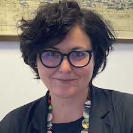
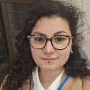

Principal investigator

Emmanuela Carbé
Associate Professor of Contemporary Italian Literature, Ca’ Foscari University of Venice
Emmanuela Carbé teaches at the Department of Humanities and is a member of the Venice Centre for Digital and Public Humanities (VeDPH). Her research combines authorial philology and digital humanities, with a focus on born-digital literary archives, which she investigates through a forensic-philological approach and to which she devoted the monograph Digitale d’autore. Macchine, archivi, letterature (FUP-USiena Press, 2023). She trained as a philologist at the University of Pavia, where she worked on PAD, Pavia Archivi Digitali (2013-2018), and held research positions at the University of Siena (2018-2025). Since 2024 she has coordinated ALDiNa, a Special Interest Group of AIUCD in collaboration with CLARIN-IT.
Contact: emmanuela.carbe [at] unive.it
Institutional page (opens in a new tab)
Collaborators

Mariangela Giglio
Research fellow, 1 November 2026 - 30 April 2027
Her fellowship, “Application of forensic-philological procedures within the BLADE project”, is devoted to the forensic acquisition and analysis of born-digital literary materials (disk imaging, metadata extraction, recovery of deleted files) and to documenting the workflow in a technical report and a dataset.
Contact: mariangela.giglio [at] unive.it
Personal page, University of Bologna (opens in a new tab)
Internships
BLADE gladly welcomes internship proposals from students applying for an internship at the Venice Centre for Digital and Public Humanities (VeDPH) (opens in a new tab). To propose one, write to vedph@unive.it.